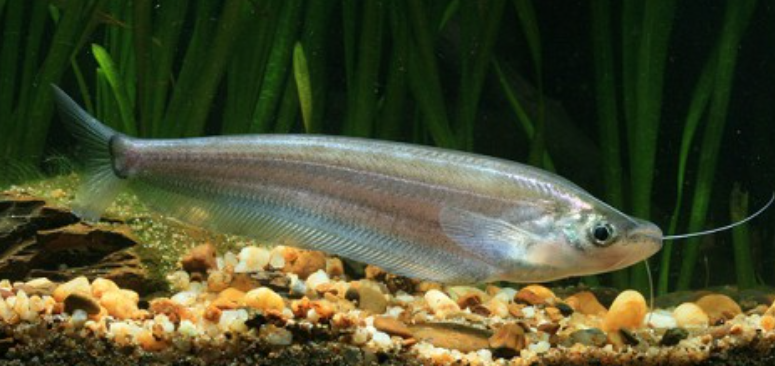
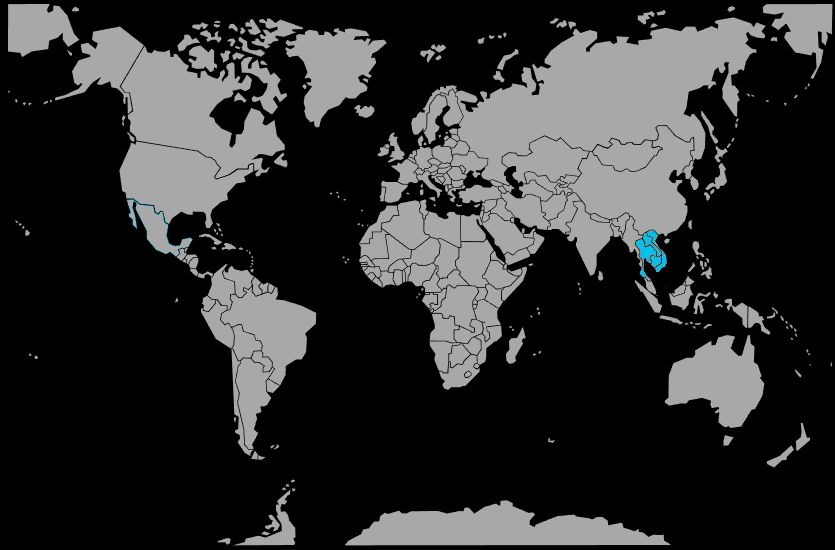

Systématique
- Ordre : Siluriformes
- Famille : Siluridae
- Genre : Kryptopterus
- Espèce : K. cheveyi

Kryptopterus cheveyi est une espèce de silure asiatique décrite par Durand en 1940. Contrairement au célèbre silure de verre d'aquarium (K. vitreolus), cette espèce ne présente pas une transparence cristalline.
Il s'agit d'un poisson de grande taille pour le genre, pouvant atteindre entre 20 et 30 cm de longueur à l'âge adulte (certaines sources scientifiques mentionnent jusqu'à 34 cm). Son corps est très compressé latéralement, de couleur argentée à grisâtre opaque ou légèrement translucide selon l'éclairage. Il possède une caractéristique distinctive : une tache noire bien visible juste derrière l'opercule (tache humérale).
Sa nageoire dorsale est minuscule, voire vestigiale, comme chez beaucoup de Kryptopterus, tandis que sa nageoire anale est extrêmement longue, parcourant la quasi-totalité de la partie inférieure du corps.
C'est un poisson pélagique (nageant en pleine eau) et grégaire qui vit en bancs dans la nature. En raison de sa grande taille, un groupe nécessite un volume considérable.
Bien que relativement calme avec les poissons de taille équivalente, K. cheveyi est un prédateur piscivore doté d'une bouche assez large. Il considère tout poisson inférieur au tiers de sa taille comme une proie potentielle. Il est actif et nage souvent avec la tête légèrement relevée, ondulant sur place face au courant.
Mode : ovipare.
Il n'existe aucune information disponible concernant la reproduction réussie de cette espèce en aquarium domestique. Dans son milieu naturel, c'est une espèce migratrice (potamodrome) qui remonte les cours d'eau et pénètre dans les forêts inondées pendant la saison des crues pour frayer.
Dimorphisme sexuel : Aucune information fiable disponible sur les caractères sexuels externes permettant de différencier mâles et femelles hors période de frai.
Espérance de vie : Probablement supérieure à 8-10 ans compte tenu de sa taille, bien que les données précises en captivité manquent.
Cette espèce est endémique du bassin du Mékong et du Chao Phraya en Asie du Sud-Est. On la retrouve principalement en Thaïlande, au Laos, au Cambodge et au Vietnam.
Il fréquente les grands fleuves aux eaux turbides, les plaines inondables et les zones à courant lent ou modéré. Il est souvent capturé dans les pêcheries locales pour la consommation humaine au Cambodge et au Vietnam.
Répartition

Origine naturelle :
- Asie du Sud-Est (Bassin du Mékong).
- Thaïlande.
- Laos.
- Cambodge.
- Vietnam.
Paramètres de maintenance
Température : 24 à 28 °C.
pH : 6,0 à 7,5.
GH : 5 à 15 °dGH.
Volume conseillé : Minimum 600 à 800 L (pour un petit groupe). Ce n'est pas une espèce adaptée aux aquariums standards en raison de sa taille adulte (20-30 cm) et de son besoin de vivre en groupe.
Régime alimentaire
Régime : carnivore / piscivore.
Dans la nature, il se nourrit de poissons, de crustacés et d'insectes.
En captivité, il nécessite des proies conséquentes : vers de terre, crevettes, chair de poisson, gros granulés carnés. Il ne doit absolument pas être maintenu avec de petits tétras ou rasboras qui finiraient dévorés.